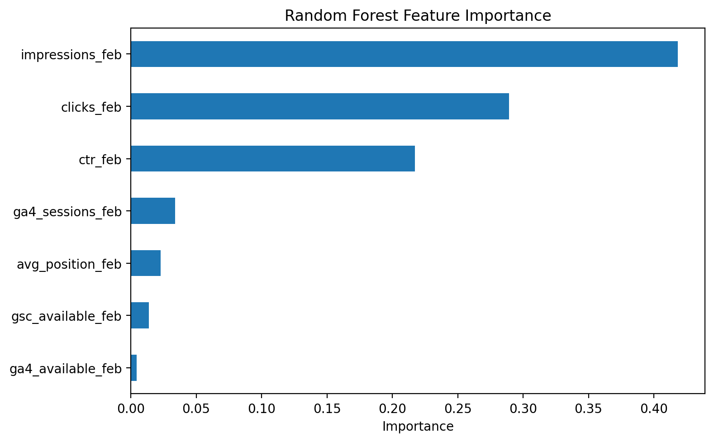
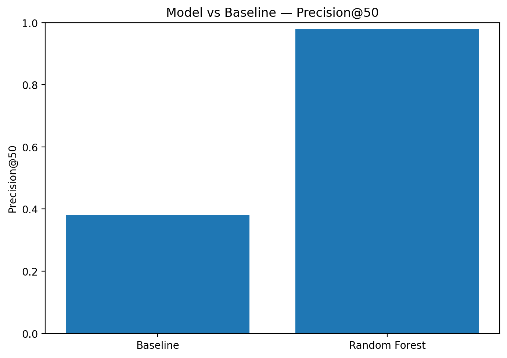

Lane: Lane 2 — Refresh / Content Opportunity Scoring
Author: Harshit
This capstone asks whether February 2026 search and analytics signals can support a ranked queue of pages for refresh review. The analysis uses measured February GSC and GA4 signals as features and a March 2026 observed GSC outcome as the evaluation proxy. A transparent position/CTR-and-volume baseline is compared with a Random Forest using a client-grouped 80/20 holdout split. On the held-out test set, the baseline achieved Precision@50 of 0.380 while the Random Forest achieved 0.980 Precision@50 and 0.846 ROC-AUC, against a 64.51% majority-class base rate. The output is a decision-support ranking for human review and does not establish that refreshing a page will cause traffic recovery.
The system ranks content/page records for human refresh review. The unit is one content item for one client. February 2026 is the feature window and March 2026 is the outcome window. The output is a ranked score/queue; a reviewer inspects high-ranked records and decides whether further investigation is warranted.
The model uses seven February features: impressions, clicks, CTR, impression-weighted average position, GA4 sessions, GSC availability, and GA4 availability. Client and content identifiers are not model features; the client identifier is used only for grouped validation. March measurements, the target, trend_direction, trend_pct, and other future/label-derived fields are excluded. No client names, domains, private queries, credentials, or raw client-identifying exports are included.
The transparent baseline combines CTR opportunity relative to the February position-bucket mean with February impressions. Its training-only benchmark is used on the same client-grouped test set as the Random Forest.
A Random Forest classifier was used to produce a ranking score. Configuration: 300 trees, maximum depth 8, minimum leaf size 20, balanced class weights, random seed 42. The target proxy is went_dark=1 when a record has zero measured GSC clicks in March 2026 among records with at least one measured March GSC day.
The evaluation uses an 80/20 GroupShuffleSplit grouped by client. There were 105,652 training rows and 55,887 test rows, with 33 training clients, 9 test clients, and zero client overlap. The test positive/majority-class base rate was 64.51%.
| Method | Precision@50 | ROC-AUC |
|---|---|---|
| Transparent baseline | 0.380 | — |
| Random Forest | 0.980 | 0.846 |
Among the model's top 50 held-out predictions, 49 were true positives and 1 was a false positive. The false positive illustrates why the score should prioritize review rather than automate an editorial decision.
The strongest model reliance was on February impressions, clicks, and CTR. Feature importance describes model reliance, not causality.

Use the ranking to review high-scoring pages first, inspect their February search/analytics context, validate the page manually, record the human decision, and monitor any future intervention. The output is decision support, not a causal prescription.

The reproducibility artifact is work/notebooks/capstone.ipynb. The notebook uses random seed 42, builds the time-separated feature/label frame, performs the client-grouped split, trains the model, evaluates the baseline and model on the same held-out records, and writes the metrics and figures.
Repository: GitHub repository
Built on the FlyRank ML Internship dataset.